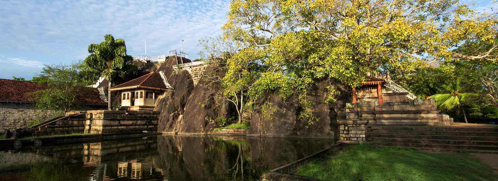

An ancient rock temple set around a picturesque lotus pond, famous for its romantic carvings and serene atmosphere.
Established as early as the 3rd century BC by King Devanampiya Tissa, Isurumuniya is a rock-cut temple that demonstrates the artistic finesse of ancient Anuradhapura. It is uniquely built around a massive rock monolith and a tranquil lotus pond.
The temple is world-famous for its stone carvings, particularly the 'Isurumuni Lovers' (believed to represent Prince Saliye and Ashokamala) and the 'Elephants in the Pond'. These carvings are marvels of the Gupta style and represent some of the earliest secular art in Sri Lanka.
Back to Anuradhapura Hub